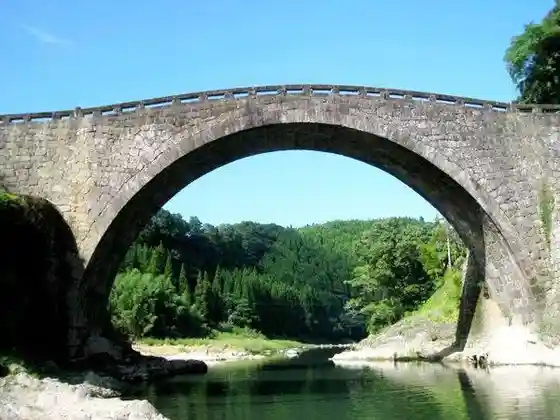
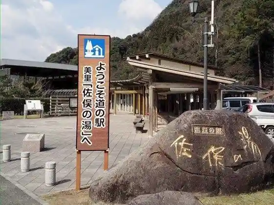
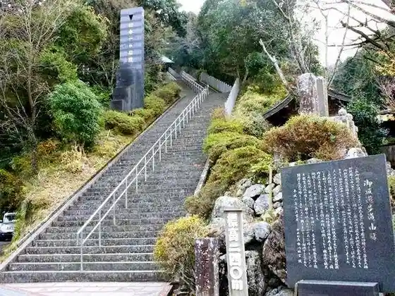
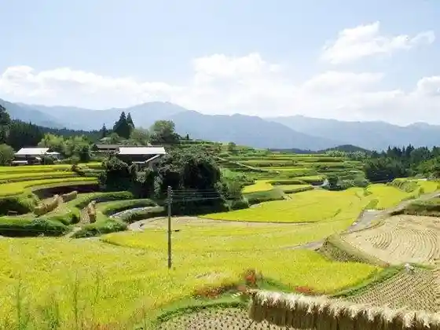

Reidai Hashi
Misatomachi, Kumamoto · 0964-47-1111 · Official / source link

Roadside Station Misatomachi (Samata Baths)
Misatomachi, Kumamoto · 0964-46-4111 · Official / source link

Nippon'ichi no Ishidan (Shaka In Misaka Promenade)
Misatomachi, Kumamoto · 0964-47-1111 · Official / source link

Ozaki Chiku no Tanada
Misatomachi, Kumamoto · 0964-47-1111 · Official / source link

Midorikawa Dam
Misatomachi, Kumamoto · 0964-48-0216 · Official / source link
Makado Hashi (Makadobashi)
Misatomachi, Kumamoto · 0964-47-1111 · Official / source link
Okubo Hashi
Misatomachi, Kumamoto · 0964-47-1111 · Official / source link
Futamata Hashi
Misatomachi, Kumamoto · 0964-47-1111 · Official / source link
Osu Kame Taki Hashi (Okedakibashi)
Misatomachi, Kumamoto · 0964-47-1111 · Official / source link
Misatomachi Forest Campground Garden Pureisu
Misatomachi, Kumamoto · 0964-48-0158 · Official / source link
Misatomachi Yasuragi Koryu Taiken Shisetsu Genki no Mori Kajika
Misatomachi, Kumamoto · 0964-46-3993 · Official / source link
Foresutoadobencha Misatomachi
Misatomachi, Kumamoto · 080-8387-3310 · Official / source link
Naidaijin Hashi
Misatomachi, Kumamoto · 0964-47-1111 · Official / source link
Kenji Ta Castle Ruins
Misatomachi, Kumamoto · 0964-46-2038 · Official / source link
Shita Fukura no Tanada
Misatomachi, Kumamoto · 0964-47-1111 · Official / source link
Shiroishi no no Tanada
Misatomachi, Kumamoto · 0964-47-1111 · Official / source link
Nen Ne Hashi
Misatomachi, Kumamoto · 0964-46-2038 · Official / source link
Daiichi Tsuru Kawa Kyoryo Kyokyaku
Misatomachi, Kumamoto · 0964-47-1111 · Official / source link
Nihon Sugi Toge
Misatomachi, Kumamoto · 0964-47-1111 · Official / source link
Misatomachi Futtopasu Kyokai
Misatomachi, Kumamoto · 0964-27-9850 · Official / source link
Hakkaku Tonneru
Misatomachi, Kumamoto · 0964-47-1111 · Official / source link
Takashima Sono
Misatomachi, Kumamoto · 0964-46-3284 · Official / source link
O Bento Seizohambai Maikitchin
Misatomachi, Kumamoto · 0964-47-1936 · Official / source link